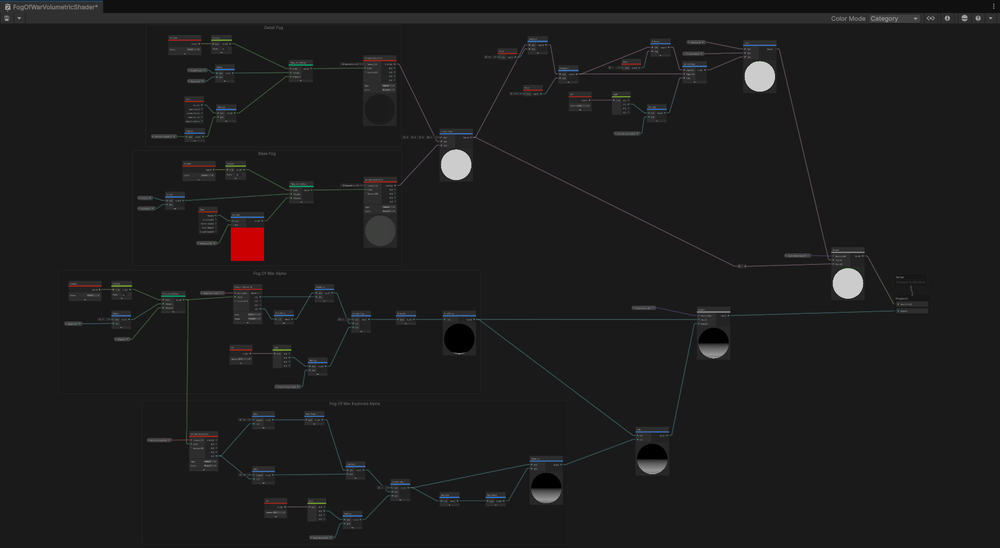

Interactive Volumetric Fog Of War
Fog of war implemented using render textures and scripting. Can be used with volumetric fog or with a simple plane fog simulation.
Unity
Photoshop

Fog of war implemented using render textures and scripting. Can be used with volumetric fog or with a simple plane fog simulation.